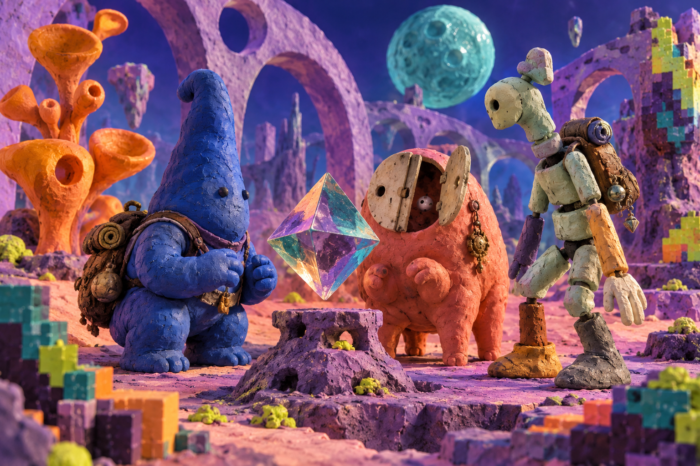

Gesture battle / turn choice
Choose a gesture
Choose a gesture. A turn is not spent until commit.
Material lab / specimen 03
Party, gesture, and curio pieces for an original turn-based world.

Gesture battle / turn choice
Choose a gesture. A turn is not spent until commit.
Party / active member
Choose a member to preview the active slot.
Curio-bag / inspect first
Inspecting does not consume a curio.